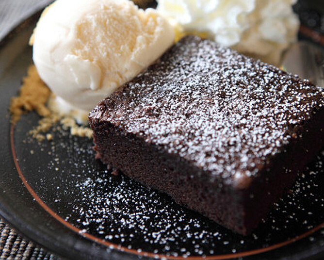
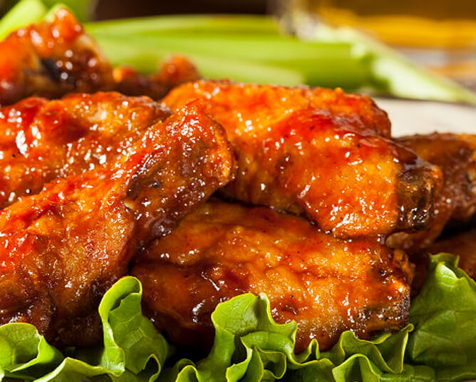
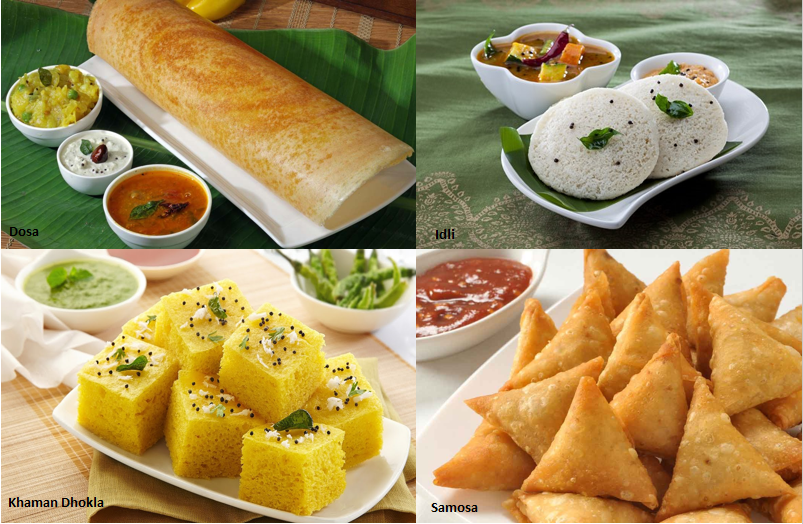

Good food is good mood
How to make a Black forest cake
June 2 2021
Preheat oven to 350 degrees F (175 degrees C). Grease and flour two 9 inch, round, cake pans; cover bottoms with waxed paper.In a large bowl, combine flour, 2 cups sugar, cocoa, baking powder, baking soda, and salt. Add eggs, milk, oil, and 1 tablespoon vanilla; beat until well blended. Pour batter into prepared pans.Bake for 35 minutes, or until wooden toothpick inserted in centers comes out clean. Cool layers in pans on wire racks 10 minutes. Loosen edges, and remove to racks to cool completely.Drain cherries, reserving 1/2 cup juice. Combine reserved juice, cherries, 1 cup sugar and cornstarch in a 2 quart saucepan. Cook over low heat until thickened, stirring constantly. Stir in 1 teaspoon vanilla. Cool before using. Combine whipping cream and confectioner's sugar in a chilled medium bowl. Beat with an electric mixer at high speed until stiff peaks form.With long serrated knife, split each cake layer horizontally in half. Tear one split layer into crumbs; set aside. Reserve 1 1/2 cups Frosting for decorating cake; set aside. Gently brush loose crumbs off top and side of each cake layer with pasty brush or hands. To assemble, place one cake layer on cake plate. Spread with 1 cup frosting; top with 3/4 cup cherry topping. Top with second cake layer; repeat layers of frosting and cherry topping. Top with third cake layer. Frost side of cake. Pat reserved crumbs onto frosting on side of cake. Spoon reserved frosting into pastry bag fitted with star decorator tip. Pipe around top and bottom edges of cake. Spoon remaining cherry topping onto top of cake.
How to make Rasagullas
June 3 2021

firstly, in a large vessel get 2 litre milk of milk to a boil stirring occasionally. once the milk comes to a boil, pour 2 tbsp lemon juice and stir well. you can alternatively use curd or vinegar. stir until the milk curdles keeping the flame on low to medium. do not boil further once water separates completely. drain the curdled milk over a cloth-lined over a colander. you can use the leftover water to make soup or knead the dough as they are very nutritious. squeeze off the water completely. be careful as the curdled milk will be very hot. rinse off the curdled milk with fresh water to remove sourness from lemon juice. squeeze off the water completely. do not over squeeze as the moisture in paneer will be lost. hang for 1 hour making sure the water is drained completely, yet remain the moisture. after 1 hour, start to mash the paneer for 5 minutes. mash the paneer till it turns out smooth texture without any grains of paneer. now prepare small ball sized paneer and keep aside. cover and keep to prevent from drying. in a large vessel take 1 cup sugar, 5 cup water and 3 pod cardamom. stir and dissolve the sugar completely. now boil the water for 5 minutes. drop in rolled paneer balls one by one into boiling sugar water. cover and boil for 10 minutes or until rasgulla doubles in size. now drop into ice-cold water immediately, to prevent from shrinking in size. once cooled completely, take into a serving bowl and pour in leftover sugar water. finally, enjoy rasgulla chilled or as it is.
How to make Spicy chicken
June 4 2021
To make Masala Chicken, first thoroughly wash the chicken under running water. Now put it in some warm salted water and allow it to rest for 10 minutes and throw the water away and wash again. This helps to remove the smell of the chicken.Add oil and ghee in pan and heat over medium flame. When the oil is hot enough, add bay leaves and both the cardamom and cinnamon. Saute for a minute and then add finely chopped onion into it. Cook till onions turn pink. Then add the ginger-garlic paste. Fry for a minute and then add chicken pieces in it. Cook chicken for 2-3 minutes until it turns white.Quickly, add red chilli powder, coriander powder, turmeric, cumin powder, and salt to taste. Stir to mix all the ingredients well with the chicken. Cook for a minute and then add finely chopped tomatoes and green chillies (slit and halved). Now reduce the flame and cook covered for 6-7 minutes and then uncovered till the chicken is browned.Add one cup water and cover the pan with a lid and cook for 2-4 minutes until the chicken is tender and soft. Remove the lid and garnish with garam masala powder, coriander leaves, kasoori methi powder and cook on high flame till the oil separates. Your Masala Chicken or Chicken Masala is ready. Enjoy with butter naan, rice or roti.
Other blog-posts
How to make chocolate glazier cake
June 5 2021
.png)
How to make laddus
June 6 2021
.png)
How to make south indian dishes
June 07 2021
Author-information

Hi I'm Rohith completed my degree and doing a job in hcl I am a talented, ambitious and hardworking individual, with broad skills and experience in digital and printed marketing, social media and leading projects. Furthermore, I am adept at handling multiple tasks on a daily basis competently and at working well under pressure. A key strength is communication; building strong relationships with people in order to deliver the best results.